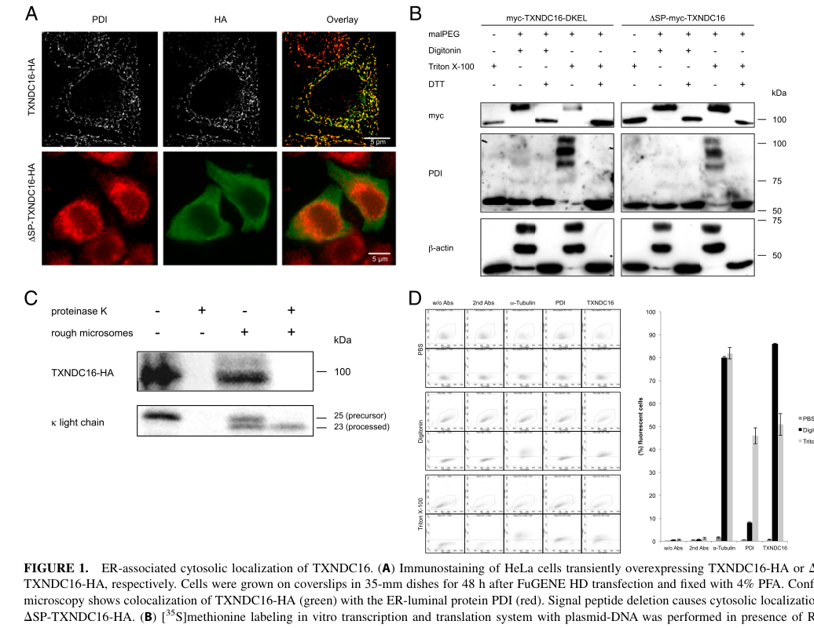

TXNDC16 (Thioredoxin domain-containing protein 16; also called ERp90 or KIAA1344) is a large (825 aa precursor) soluble glycoprotein of the protein disulfide isomerase (PDI) family resident in the endoplasmic reticulum lumen. After signal-peptide cleavage it comprises several (about five) thioredoxin (Trx)-like domains and is N-glycosylated, with at least some of its cysteines forming intramolecular disulfides. Notably, none of its Trx domains contains a canonical Cys-Xaa-Xaa-Cys redox active-site motif, so it is likely a redox-inactive or non-catalytic PDI-family member whose precise enzymatic activity remains uncharacterized. Its best-supported molecular role is as a direct interaction partner of the ER-associated degradation (ERAD) flavoprotein ERFAD (FOXRED2), suggesting a function in recruitment or delivery of substrates to the ERAD retrotranslocation machinery. TXNDC16 carries a masked, non-functional KDEL-type ER-retrieval motif and is therefore partly secreted into the extracellular space; it has been described as a meningioma-associated antigen against which patient autoantibodies arise.
| GO Term | Evidence | Action | Reason |
|---|---|---|---|
|
GO:0005576
extracellular region
|
IEA
GO_REF:0000044 |
KEEP AS NON CORE |
Summary: Electronic (UniProt SubCell "Secreted") assignment of extracellular localization. TXNDC16 is partly secreted because its KDEL-type ER-retrieval motif is masked and non-functional. This is a real but secondary localization relative to its primary ER-lumen residence.
Reason: Secretion is genuine but secondary; the protein's primary site is the ER lumen.
Supporting Evidence:
file:human/TXNDC16/TXNDC16-uniprot.txt
SUBCELLULAR LOCATION: Secreted
|
|
GO:0005788
endoplasmic reticulum lumen
|
IEA
GO_REF:0000044 |
ACCEPT |
Summary: Electronic assignment of ER-lumen localization, consistent with the experimental IDA/EXP annotations and the curated subcellular location. This is the primary site of TXNDC16.
Reason: Correct primary localization; TXNDC16/ERp90 is a soluble ER-luminal glycoprotein.
Supporting Evidence:
file:human/TXNDC16/TXNDC16-uniprot.txt
Endoplasmic reticulum lumen
|
|
GO:0005576
extracellular region
|
EXP
PMID:25122923 Secretion and immunogenicity of the meningioma-associated an... |
KEEP AS NON CORE |
Summary: Experimental demonstration that TXNDC16 is secreted from human cell lines because its ER retrieval motif is masked and non-functional. A real but secondary localization.
Reason: Genuine secretion arising from the masked KDEL motif, but secondary to the primary ER-lumen localization.
Supporting Evidence:
PMID:25122923
We were able to show TXNDC16 secretion in different human cell lines due to masked and therefore nonfunctional ER retrieval motif.
|
|
GO:0005788
endoplasmic reticulum lumen
|
EXP
PMID:25122923 Secretion and immunogenicity of the meningioma-associated an... |
ACCEPT |
Summary: Experimental confirmation of the ER-luminal glycoprotein localization of TXNDC16.
Reason: Correct primary localization, consistent with the IDA and electronic annotations.
Supporting Evidence:
PMID:25122923
TXNDC16 was previously found to be an endoplasmic reticulum (ER)-luminal glycoprotein.
|
|
GO:0005515
protein binding
|
IPI
PMID:21359175 Identification of the PDI-family member ERp90 as an interact... |
KEEP AS NON CORE |
Summary: Co-immunoprecipitation showing TXNDC16/ERp90 directly interacts with ERFAD (FOXRED2), an ER flavoprotein involved in ERAD. This is the functionally most informative interaction for TXNDC16, suggesting an ERAD substrate-recruitment/delivery role, but the bare protein binding term itself is uninformative.
Reason: Records a genuine, functionally meaningful ERAD-related interaction, but per guidelines bare protein binding is not elevated to a core molecular function; a more specific adapter/ERAD term would be preferable if the role is confirmed.
Supporting Evidence:
PMID:21359175
ERp90 co-immunoprecipitates with ERFAD, a flavoprotein involved in ER-associated degradation (ERAD), through what is most likely a direct interaction.
|
|
GO:0005788
endoplasmic reticulum lumen
|
IDA
PMID:21359175 Identification of the PDI-family member ERp90 as an interact... |
ACCEPT |
Summary: Direct evidence that ERp90/TXNDC16 is a soluble ER-luminal glycoprotein.
Reason: Experimentally supported primary localization.
Supporting Evidence:
PMID:21359175
we find ERp90 to be a soluble ER-luminal glycoprotein that comprises five potential thioredoxin (Trx)-like domains.
|
|
GO:0070062
extracellular exosome
|
HDA
PMID:19199708 Proteomic analysis of human parotid gland exosomes by multid... |
KEEP AS NON CORE |
Summary: High-throughput proteomic detection of TXNDC16 in parotid-gland exosomes. A later study could not confirm exosomal secretion in HEK293 cells, so this localization is uncertain; retained as non-core rather than removed since it is a proteomics-based experimental detection.
Reason: Proteomic detection in exosomes that was not reproduced in a subsequent study (PMID:25122923); uncertain and non-core, but not removed on weak grounds.
Supporting Evidence:
PMID:25122923
A previously indicated exosomal TXNDC16 secretion could not be confirmed in HEK293 cells.
|
Q: Does TXNDC16/ERp90 possess any thiol-disulfide redox activity despite lacking a canonical CXXC motif, using its other conserved cysteines, or is it a purely non-catalytic scaffold/adapter?
Q: Is the proposed ERAD substrate-recruitment/delivery role (via ERFAD/FOXRED2) borne out by identifying endogenous ERAD substrates whose degradation depends on TXNDC16?
Experiment: Knock out TXNDC16 in human cells and assay the degradation kinetics of model ERAD substrates, with and without ERFAD/FOXRED2, to test the proposed substrate-delivery function.
Experiment: Perform in vitro redox assays (e.g., insulin turbidimetric reduction, RNase refolding) with purified TXNDC16 and active-site cysteine mutants to determine whether it has any catalytic oxidoreductase activity in the absence of a canonical CXXC motif.
The research report should be a detailed narrative explaining the function, biological processes, and localization of the gene product. Citations should be given for all claims.
You should prioritize authoritative reviews and primary scientific literature when conducting research. You can supplement
this with annotations you find in gene/protein databases, but these can be outdated or inaccurate.
We are specifically interested in the primary function of the gene - for enzymes, what reaction is catalyzed, and what is the substrate specificity? For transporters, what is the substrate? For structural proteins or adapters, what is the broader structural role? For signaling molecules, what is the role in the pathway.
We are interested in where in or outside the cell the gene product carries out its function.
We are also interested in the signaling or biochemical pathways in which the gene functions. We are less interested in broad pleiotropic effects, except where these elucidate the precise role.
Include evidence where possible. We are interested in both experimental evidence as well as inference from structure, evolution, or bioinformatic analysis. Precise studies should be prioritized over high-throughput, where available.
The literature retrieved here is consistent with the requested target: human TXNDC16 (thioredoxin domain-containing protein 16), also referred to as ERp90, and described as an ER-luminal glycoprotein with ER-targeting/retention features. This matches the UniProt-provided identity and the stated thioredoxin-like domain architecture. (harz2014secretionandimmunogenicity pages 1-2, oliveira2025endoplasmicreticulumredoxome pages 4-5)
Proteins with thioredoxin-like domains in the endoplasmic reticulum (ER) often participate in oxidative protein folding, quality control, and ER-associated degradation (ERAD). Many have catalytic CXXC active-site motifs to mediate thiol–disulfide exchange; however, some members are non-catalytic, functioning as scaffolds/adaptors within folding/ERAD complexes rather than directly catalyzing disulfide chemistry. TXNDC16 is repeatedly placed in this ER oxidoreductase/quality-control context. (oliveira2025endoplasmicreticulumredoxome pages 4-5, patel2020oxidoreductasesinglycoprotein pages 7-9)
Secretory-pathway proteins are typically targeted to the ER by an N-terminal signal peptide, enabling cotranslational ER translocation via SRP/Sec61 and signal-peptidase cleavage. ER luminal resident proteins commonly use C-terminal KDEL-like motifs for retrieval from the Golgi back to the ER, though these signals can be context-dependent or functionally masked. TXNDC16 includes a predicted signal peptide and a KDEL-variant (DKEL), but its retention can be incomplete. (harz2014secretionandimmunogenicity pages 2-3, harz2014secretionandimmunogenicity pages 6-6)
TXNDC16 was described as having a molecular mass of ~93 kDa (reference sequence cited in the primary paper) and being broadly expressed across normal and many cancer tissues. (harz2014secretionandimmunogenicity pages 1-2)
A key point for functional annotation is that TXNDC16/ERp90 contains multiple thioredoxin-like domains but is annotated in an authoritative ER folding/ERAD review as having inactive/non-canonical Trx-like motifs (e.g., CX8C, CX9C, CX6C rather than canonical catalytic CXXC). This is presented as evidence that ERp90 is non-catalytic (i.e., not a classical thiol–disulfide oxidoreductase enzyme), supporting a role as a structural/complex component in ER quality control rather than a substrate-specific oxidoreductase. (patel2020oxidoreductasesinglycoprotein pages 5-7, patel2020oxidoreductasesinglycoprotein pages 7-9)
Implication for “primary function” request: based on the retrieved sources, TXNDC16 is best described as a PDI/thioredoxin-domain-containing ER quality-control factor without a clearly defined catalytic reaction or specific substrate list; its functional evidence is stronger at the pathway/complex level (ERAD association) than at the substrate-specific enzymology level. (patel2020oxidoreductasesinglycoprotein pages 7-9, patel2020oxidoreductasesinglycoprotein pages 5-7)
Harz et al. (2014, J Immunol, published online Aug 13, 2014; issue Sep 2014; https://doi.org/10.4049/jimmunol.1303098) performed confocal microscopy in human cells expressing TXNDC16-HA and reported colocalization with PDI, an ER-luminal marker, supporting ER localization. Deleting the first 27 amino acids (the predicted signal peptide) shifted localization from ER-associated to cytosolic, showing the signal peptide is required for ER targeting. (harz2014secretionandimmunogenicity pages 3-4)
Visual evidence for ER localization and domain schematic is present in the paper’s figures. (harz2014secretionandimmunogenicity media 3c06b519, harz2014secretionandimmunogenicity media d160178d)
Despite harboring a KDEL-like motif (DKEL), Harz et al. report that TXNDC16 can be secreted into supernatants from multiple human cell lines, and they interpret this as being due to a masked/nonfunctional ER retrieval motif (i.e., incomplete ER retention). They further report detection of TXNDC16 protein in serum, bound in circulating immune complexes, and discuss uncertainty regarding whether secretion is classical ER/Golgi-dependent or unconventional. They did not confirm a previously suggested exosomal secretion mechanism in HEK293 cells (CD63-marked fraction). (harz2014secretionandimmunogenicity pages 1-2, harz2014secretionandimmunogenicity pages 6-6, harz2014secretionandimmunogenicity pages 8-8)
In a widely cited review on oxidoreductases in glycoprotein folding and ERAD (Patel et al., 2020, Cells, Sep 2020; https://doi.org/10.3390/cells9092138), TXNDC16 (ERp90) is specifically placed in the ERAD (retrotranslocation) category and described as non-catalytic. The review reports interactions/associations with the ERAD lectin OS-9 and adaptor SEL1L, and positions ERp90 in assemblies alongside other ERAD redox/processing factors (e.g., ERdj5; ERFAD noted as NADPH-dependent reductase). This supports a model where TXNDC16 acts as a component of ERAD machinery—likely in recognition/scaffolding or organization of ERAD complexes—rather than directly performing thiol–disulfide catalysis. (patel2020oxidoreductasesinglycoprotein pages 5-7, patel2020oxidoreductasesinglycoprotein pages 7-9)
A more recent review of the ER redoxome includes TXNDC16 among PDI/thioredoxin-domain-containing proteins (alias ERp90), reinforcing its placement within ER proteostasis/redox networks, while not adding TXNDC16-specific mechanistic detail in the excerpt retrieved. (oliveira2025endoplasmicreticulumredoxome pages 4-5)
Korte & Mathios (2024, International Journal of Molecular Sciences, Apr 2024; https://doi.org/10.3390/ijms25084195) review liquid biopsy approaches for meningioma and summarize prior TXNDC16 work as a meningioma-associated antigen. They cite evidence that a panel of five TXNDC16 immunogenic epitopes (derived from mapping 163 overlapping peptides) could discriminate meningioma from healthy sera with ~90% sensitivity and ~83.7% specificity, framing this as a proof-of-concept serology/autoantibody liquid biopsy approach. They also provide expert cautions that tumor-associated antigen (TAA) autoantibodies can lack specificity across cancers or occur in autoimmunity/healthy individuals, implying that TXNDC16 would likely perform best as part of multi-antigen panels and within well-validated clinical workflows. (korte2024innovationinnoninvasive pages 7-9)
Within the retrieved 2023–2024 corpus, TXNDC16 appears mainly in review/omics contexts rather than in detailed mechanistic papers focused on TXNDC16. A 2024 PNAS study in mouse testis proteomics (in the context of multi-gene knockout in the WFDC cluster) notes TXNDC16 upregulation among proteins associated with protein degradation/quality control, which is directionally consistent with an ER quality-control role but is not TXNDC16-specific mechanistic proof in human cells. (kent2024largescalecrisprcas9deletions pages 8-9)
The most concrete translational “implementation pathway” is serum-based detection of anti-TXNDC16 autoantibodies using peptide arrays or reduced epitope panels. This is supported by primary serology results (Harz et al. 2014) and positioned within the broader liquid biopsy landscape in a 2024 review, but remains a proof-of-concept rather than an approved clinical test. (harz2014secretionandimmunogenicity pages 6-7, korte2024innovationinnoninvasive pages 7-9)
In cell biology and proteostasis research, TXNDC16/ERp90 is used as a named component of the ERAD retrotranslocation network (OS-9/SEL1L-associated), which can guide experimental design (e.g., ERAD complex mapping, perturbation studies of ER proteostasis). This is a “real-world” research application as part of ERAD conceptual/interaction maps. (patel2020oxidoreductasesinglycoprotein pages 7-9)
Harz et al. (2014, J Immunol; https://doi.org/10.4049/jimmunol.1303098) report that while no single TXNDC16 epitope was universally recognized, a five-epitope subset chosen from a 163-peptide overlapping array discriminated meningioma vs controls with ~87.2% accuracy, ~90% sensitivity, and ~83.7% specificity; using all peptides yielded substantially worse performance (~53.8% accuracy, ~24.2% specificity, ~77.3% sensitivity). These values are restated in the 2024 review as evidence supporting TXNDC16’s biomarker potential. (harz2014secretionandimmunogenicity pages 6-7, korte2024innovationinnoninvasive pages 7-9)
Open Targets returns low association scores for TXNDC16 with several diseases (including meningioma and Alzheimer disease), but with zero underlying evidence rows in the retrieved output. These associations therefore should not be treated as strong evidence of causality or clinical utility without supporting primary genetics/functional studies. (OpenTargets Search: -TXNDC16)
| Aspect | Finding | Best supporting citations |
|---|---|---|
| Identity/synonyms | TXNDC16 is the human gene matching UniProt Q9P2K2; reported synonyms include ERp90 and KIAA1344. Harz 2014 identifies TXNDC16 as a meningioma-associated antigen and notes it had previously been characterized as an ER-luminal glycoprotein. Harz 2014, J Immunol, published Sep 2014, URL: https://doi.org/10.4049/jimmunol.1303098 | (harz2014secretionandimmunogenicity pages 1-2) |
| Domains/motifs | TXNDC16/ERp90 is a thioredoxin domain-containing, PDI-family-like protein. Review evidence places it in the ER oxidoreductase network but notes its Trx-like motifs are non-canonical/inactive rather than classical catalytic CXXC motifs: Trxl1-CX8C, Trxl2-CX9C, Trxl3-CX6C, Trxl4/5 inactive. It also has a predicted N-terminal 27 aa signal peptide and a C-terminal DKEL KDEL-like motif. Patel 2020, Cells, Sep 2020, URL: https://doi.org/10.3390/cells9092138 | (patel2020oxidoreductasesinglycoprotein pages 5-7, harz2014secretionandimmunogenicity pages 2-3, harz2014secretionandimmunogenicity media 3c06b519) |
| Subcellular localization | Experimental data support predominant ER luminal/ER-associated localization. TXNDC16-HA colocalizes with PDI by confocal microscopy, and deleting the signal peptide shifts localization from ER-associated to cytosolic, showing signal-peptide-dependent ER targeting. Harz 2014, J Immunol, Sep 2014, URL: https://doi.org/10.4049/jimmunol.1303098 | (harz2014secretionandimmunogenicity pages 3-4, harz2014secretionandimmunogenicity media 3c06b519) |
| Secretion/extracellular presence | Despite ER-targeting features, TXNDC16 is also reported in cell-culture supernatants and serum/circulating immune complexes. Harz 2014 concluded secretion likely reflects a masked/nonfunctional ER retrieval motif; the authors could not confirm prior exosomal secretion in HEK293 cells. Korte 2024 highlights this as a basis for liquid-biopsy interest. Korte 2024, Int J Mol Sci, Apr 2024, URL: https://doi.org/10.3390/ijms25084195 | (harz2014secretionandimmunogenicity pages 1-2, harz2014secretionandimmunogenicity pages 6-6, harz2014secretionandimmunogenicity pages 8-8, korte2024innovationinnoninvasive pages 7-9, harz2014secretionandimmunogenicity pages 6-7) |
| Proposed molecular function | Current evidence supports TXNDC16 as an ER quality-control/thioredoxin-like scaffold or chaperone-associated factor, not a well-established classical oxidoreductase enzyme. Because its Trx-like domains lack canonical catalytic motifs, the strongest inference is a role in ER protein folding/quality control and ERAD-associated processes, rather than a defined substrate-specific disulfide isomerase reaction. Patel 2020, Cells, Sep 2020, URL: https://doi.org/10.3390/cells9092138 | (patel2020oxidoreductasesinglycoprotein pages 5-7, oliveira2025endoplasmicreticulumredoxome pages 4-5) |
| Interactions/complexes | TXNDC16/ERp90 is specifically linked to ERAD retrotranslocation machinery, with reported interactions involving OS-9 and SEL1L in review summaries of ER glycoprotein quality control. This places TXNDC16 in pathways handling misfolded glycoproteins in the ER. Patel 2020, Cells, Sep 2020, URL: https://doi.org/10.3390/cells9092138 | (patel2020oxidoreductasesinglycoprotein pages 5-7) |
| Disease/biomarker evidence | The clearest disease-relevant evidence is in meningioma serology. TXNDC16 was identified as a meningioma-associated antigen with autoantibody reactivity; Korte 2024 reviews it as a proof-of-concept liquid biopsy biomarker based on serum autoantibodies/peptide arrays. Open Targets currently lists only very weak association scores with zero underlying evidence rows for diseases including meningioma, Alzheimer disease, chronic kidney disease, eye disease, and tinnitus, so these database associations should be treated cautiously. Open Targets query context available in this session. | (korte2024innovationinnoninvasive pages 7-9, harz2014secretionandimmunogenicity pages 6-7, OpenTargets Search: -TXNDC16) |
| Key statistics | Harz 2014 reports TXNDC16 has a ~93 kDa predicted molecular mass and that a 5-epitope panel derived from 163 overlapping peptides discriminated meningioma vs controls with 87.2% accuracy, 90% sensitivity, and 83.7% specificity; using all peptides performed much worse (53.8% accuracy, 24.2% specificity, 77.3% sensitivity). Korte 2024 reiterates the approximate 90% sensitivity / 83.7% specificity result as support for non-invasive biomarker development. Harz 2014, J Immunol, Sep 2014, URL: https://doi.org/10.4049/jimmunol.1303098; Korte 2024, Int J Mol Sci, Apr 2024, URL: https://doi.org/10.3390/ijms25084195 | (harz2014secretionandimmunogenicity pages 1-2, korte2024innovationinnoninvasive pages 7-9, harz2014secretionandimmunogenicity pages 6-7) |
Table: This table summarizes the strongest available functional annotation evidence for human TXNDC16/ERp90, including identity verification, ER localization, inferred molecular role, ERAD associations, and current biomarker evidence. It is useful for distinguishing well-supported findings from weaker database-level disease associations.
References
(harz2014secretionandimmunogenicity pages 1-2): Christian Harz, Nicole Ludwig, Sven Lang, Tamara V. Werner, Valentina Galata, Christina Backes, Katja Schmitt, Ruth Nickels, Elmar Krause, Martin Jung, Jens Rettig, Andreas Keller, Michael Menger, Richard Zimmermann, and Eckart Meese. Secretion and immunogenicity of the meningioma-associated antigen txndc16. The Journal of Immunology, 193:3146-3154, Sep 2014. URL: https://doi.org/10.4049/jimmunol.1303098, doi:10.4049/jimmunol.1303098. This article has 10 citations.
(oliveira2025endoplasmicreticulumredoxome pages 4-5): Percillia V. S. Oliveira, Tiphany C. De Bessa, and Francisco R. M. Laurindo. Endoplasmic reticulum redoxome: protein folding and beyond. Biochemistry, 65(1):1-30, Dec 2025. URL: https://doi.org/10.1021/acs.biochem.5c00527, doi:10.1021/acs.biochem.5c00527. This article has 7 citations and is from a peer-reviewed journal.
(patel2020oxidoreductasesinglycoprotein pages 7-9): Chaitanya Patel, Haddas Saad, Marina Shenkman, and Gerardo Z. Lederkremer. Oxidoreductases in glycoprotein glycosylation, folding, and erad. Sep 2020. URL: https://doi.org/10.3390/cells9092138, doi:10.3390/cells9092138. This article has 33 citations.
(harz2014secretionandimmunogenicity pages 2-3): Christian Harz, Nicole Ludwig, Sven Lang, Tamara V. Werner, Valentina Galata, Christina Backes, Katja Schmitt, Ruth Nickels, Elmar Krause, Martin Jung, Jens Rettig, Andreas Keller, Michael Menger, Richard Zimmermann, and Eckart Meese. Secretion and immunogenicity of the meningioma-associated antigen txndc16. The Journal of Immunology, 193:3146-3154, Sep 2014. URL: https://doi.org/10.4049/jimmunol.1303098, doi:10.4049/jimmunol.1303098. This article has 10 citations.
(harz2014secretionandimmunogenicity pages 6-6): Christian Harz, Nicole Ludwig, Sven Lang, Tamara V. Werner, Valentina Galata, Christina Backes, Katja Schmitt, Ruth Nickels, Elmar Krause, Martin Jung, Jens Rettig, Andreas Keller, Michael Menger, Richard Zimmermann, and Eckart Meese. Secretion and immunogenicity of the meningioma-associated antigen txndc16. The Journal of Immunology, 193:3146-3154, Sep 2014. URL: https://doi.org/10.4049/jimmunol.1303098, doi:10.4049/jimmunol.1303098. This article has 10 citations.
(patel2020oxidoreductasesinglycoprotein pages 5-7): Chaitanya Patel, Haddas Saad, Marina Shenkman, and Gerardo Z. Lederkremer. Oxidoreductases in glycoprotein glycosylation, folding, and erad. Sep 2020. URL: https://doi.org/10.3390/cells9092138, doi:10.3390/cells9092138. This article has 33 citations.
(harz2014secretionandimmunogenicity pages 3-4): Christian Harz, Nicole Ludwig, Sven Lang, Tamara V. Werner, Valentina Galata, Christina Backes, Katja Schmitt, Ruth Nickels, Elmar Krause, Martin Jung, Jens Rettig, Andreas Keller, Michael Menger, Richard Zimmermann, and Eckart Meese. Secretion and immunogenicity of the meningioma-associated antigen txndc16. The Journal of Immunology, 193:3146-3154, Sep 2014. URL: https://doi.org/10.4049/jimmunol.1303098, doi:10.4049/jimmunol.1303098. This article has 10 citations.
(harz2014secretionandimmunogenicity media 3c06b519): Christian Harz, Nicole Ludwig, Sven Lang, Tamara V. Werner, Valentina Galata, Christina Backes, Katja Schmitt, Ruth Nickels, Elmar Krause, Martin Jung, Jens Rettig, Andreas Keller, Michael Menger, Richard Zimmermann, and Eckart Meese. Secretion and immunogenicity of the meningioma-associated antigen txndc16. The Journal of Immunology, 193:3146-3154, Sep 2014. URL: https://doi.org/10.4049/jimmunol.1303098, doi:10.4049/jimmunol.1303098. This article has 10 citations.
(harz2014secretionandimmunogenicity media d160178d): Christian Harz, Nicole Ludwig, Sven Lang, Tamara V. Werner, Valentina Galata, Christina Backes, Katja Schmitt, Ruth Nickels, Elmar Krause, Martin Jung, Jens Rettig, Andreas Keller, Michael Menger, Richard Zimmermann, and Eckart Meese. Secretion and immunogenicity of the meningioma-associated antigen txndc16. The Journal of Immunology, 193:3146-3154, Sep 2014. URL: https://doi.org/10.4049/jimmunol.1303098, doi:10.4049/jimmunol.1303098. This article has 10 citations.
(harz2014secretionandimmunogenicity pages 8-8): Christian Harz, Nicole Ludwig, Sven Lang, Tamara V. Werner, Valentina Galata, Christina Backes, Katja Schmitt, Ruth Nickels, Elmar Krause, Martin Jung, Jens Rettig, Andreas Keller, Michael Menger, Richard Zimmermann, and Eckart Meese. Secretion and immunogenicity of the meningioma-associated antigen txndc16. The Journal of Immunology, 193:3146-3154, Sep 2014. URL: https://doi.org/10.4049/jimmunol.1303098, doi:10.4049/jimmunol.1303098. This article has 10 citations.
(korte2024innovationinnoninvasive pages 7-9): Brianna Korte and Dimitrios Mathios. Innovation in non-invasive diagnosis and disease monitoring for meningiomas. International Journal of Molecular Sciences, 25:4195, Apr 2024. URL: https://doi.org/10.3390/ijms25084195, doi:10.3390/ijms25084195. This article has 11 citations.
(kent2024largescalecrisprcas9deletions pages 8-9): Katarzyna Kent, Kaori Nozawa, Rachel Parkes, Laura Dean, Frey Daniel, Mei Leng, Antrix Jain, Anna Malovannaya, Martin M. Matzuk, and Thomas X. Garcia. Large-scale crispr/cas9 deletions within the wfdc gene cluster uncover gene functionality and critical roles in mammalian reproduction. Proceedings of the National Academy of Sciences of the United States of America, Dec 2024. URL: https://doi.org/10.1073/pnas.2413195121, doi:10.1073/pnas.2413195121. This article has 10 citations and is from a highest quality peer-reviewed journal.
(harz2014secretionandimmunogenicity pages 6-7): Christian Harz, Nicole Ludwig, Sven Lang, Tamara V. Werner, Valentina Galata, Christina Backes, Katja Schmitt, Ruth Nickels, Elmar Krause, Martin Jung, Jens Rettig, Andreas Keller, Michael Menger, Richard Zimmermann, and Eckart Meese. Secretion and immunogenicity of the meningioma-associated antigen txndc16. The Journal of Immunology, 193:3146-3154, Sep 2014. URL: https://doi.org/10.4049/jimmunol.1303098, doi:10.4049/jimmunol.1303098. This article has 10 citations.
(OpenTargets Search: -TXNDC16): Open Targets Query (-TXNDC16, 5 results). Buniello, A. et al. (2025). Open Targets Platform: facilitating therapeutic hypotheses building in drug discovery. Nucleic Acids Research.

TXNDC16/ERp90 is an ER-luminal PDI-family glycoprotein lacking a canonical CXXC redox motif; its best-supported role is as an interaction partner of the ERAD flavoprotein ERFAD/FOXRED2, proposed to function in substrate recruitment/delivery to the ERAD retrotranslocation machinery. It is partly secreted (masked KDEL) and is a meningioma-associated antigen. Core MF is not a confirmed catalytic oxidoreductase activity; propose no strong catalytic MF. BP = likely ERAD-related (proposed). CC = ER lumen (primary).
proposed_new_terms: [], and frames the best-supported role as an ERFAD/FOXRED2 ERAD-substrate-recruitment partner. The PN projects GO:0003756 protein disulfide isomerase activity (verified real via OLS) onto this gene by virtue of family membership — directly at odds with the gene-level finding of redox inactivity.ER proteostasis|Folding enzyme|Protein disulfide isomerases. PN-node mapping: group→mapped GO:0003756 protein disulfide isomerase activity (ok_for_propagation_to_go, new_to_goa); class (Folding enzyme) and branch (ER proteostasis) no_mapping. Projected: GO:0003756 (new_to_goa).proposed_new_terms: [], and frames the best-supported role as an ERFAD/FOXRED2 ERAD-substrate-recruitment partner. The PN projects GO:0003756 protein disulfide isomerase activity (verified real via OLS) onto this gene by virtue of family membership — directly at odds with the gene-level finding of redox inactivity.This file is generated from the current PROTEOSTASIS phase-1 dossier and local gene-review artifacts. Edit the source review, PN mapping, or dossier rather than this generated note when correcting the underlying curation.
id: Q9P2K2
gene_symbol: TXNDC16
product_type: PROTEIN
status: COMPLETE
taxon:
id: NCBITaxon:9606
label: Homo sapiens
description: >-
TXNDC16 (Thioredoxin domain-containing protein 16; also called ERp90 or KIAA1344) is a
large (825 aa precursor) soluble glycoprotein of the protein disulfide isomerase (PDI)
family resident in the endoplasmic reticulum lumen. After signal-peptide cleavage it
comprises several (about five) thioredoxin (Trx)-like domains and is N-glycosylated, with
at least some of its cysteines forming intramolecular disulfides. Notably, none of its Trx
domains contains a canonical Cys-Xaa-Xaa-Cys redox active-site motif, so it is likely a
redox-inactive or non-catalytic PDI-family member whose precise enzymatic activity remains
uncharacterized. Its best-supported molecular role is as a direct interaction partner of the
ER-associated degradation (ERAD) flavoprotein ERFAD (FOXRED2), suggesting a function in
recruitment or delivery of substrates to the ERAD retrotranslocation machinery. TXNDC16
carries a masked, non-functional KDEL-type ER-retrieval motif and is therefore partly
secreted into the extracellular space; it has been described as a meningioma-associated
antigen against which patient autoantibodies arise.
existing_annotations:
- term:
id: GO:0005576
label: extracellular region
evidence_type: IEA
original_reference_id: GO_REF:0000044
qualifier: located_in
review:
summary: >-
Electronic (UniProt SubCell "Secreted") assignment of extracellular localization. TXNDC16
is partly secreted because its KDEL-type ER-retrieval motif is masked and non-functional.
This is a real but secondary localization relative to its primary ER-lumen residence.
action: KEEP_AS_NON_CORE
reason: >-
Secretion is genuine but secondary; the protein's primary site is the ER lumen.
supported_by:
- reference_id: file:human/TXNDC16/TXNDC16-uniprot.txt
supporting_text: 'SUBCELLULAR LOCATION: Secreted'
- term:
id: GO:0005788
label: endoplasmic reticulum lumen
evidence_type: IEA
original_reference_id: GO_REF:0000044
qualifier: located_in
review:
summary: >-
Electronic assignment of ER-lumen localization, consistent with the experimental IDA/EXP
annotations and the curated subcellular location. This is the primary site of TXNDC16.
action: ACCEPT
reason: >-
Correct primary localization; TXNDC16/ERp90 is a soluble ER-luminal glycoprotein.
supported_by:
- reference_id: file:human/TXNDC16/TXNDC16-uniprot.txt
supporting_text: Endoplasmic reticulum lumen
- term:
id: GO:0005576
label: extracellular region
evidence_type: EXP
original_reference_id: PMID:25122923
qualifier: located_in
review:
summary: >-
Experimental demonstration that TXNDC16 is secreted from human cell lines because its ER
retrieval motif is masked and non-functional. A real but secondary localization.
action: KEEP_AS_NON_CORE
reason: >-
Genuine secretion arising from the masked KDEL motif, but secondary to the primary ER-lumen
localization.
supported_by:
- reference_id: PMID:25122923
supporting_text: >-
We were able to show TXNDC16 secretion in different human cell lines due to masked and
therefore nonfunctional ER retrieval motif.
- term:
id: GO:0005788
label: endoplasmic reticulum lumen
evidence_type: EXP
original_reference_id: PMID:25122923
qualifier: located_in
review:
summary: >-
Experimental confirmation of the ER-luminal glycoprotein localization of TXNDC16.
action: ACCEPT
reason: >-
Correct primary localization, consistent with the IDA and electronic annotations.
supported_by:
- reference_id: PMID:25122923
supporting_text: >-
TXNDC16 was previously found to be an endoplasmic reticulum (ER)-luminal glycoprotein.
- term:
id: GO:0005515
label: protein binding
evidence_type: IPI
original_reference_id: PMID:21359175
qualifier: enables
review:
summary: >-
Co-immunoprecipitation showing TXNDC16/ERp90 directly interacts with ERFAD (FOXRED2), an
ER flavoprotein involved in ERAD. This is the functionally most informative interaction for
TXNDC16, suggesting an ERAD substrate-recruitment/delivery role, but the bare protein
binding term itself is uninformative.
action: KEEP_AS_NON_CORE
reason: >-
Records a genuine, functionally meaningful ERAD-related interaction, but per guidelines bare
protein binding is not elevated to a core molecular function; a more specific adapter/ERAD
term would be preferable if the role is confirmed.
supported_by:
- reference_id: PMID:21359175
supporting_text: >-
ERp90 co-immunoprecipitates with ERFAD, a flavoprotein involved in ER-associated
degradation (ERAD), through what is most likely a direct interaction.
- term:
id: GO:0005788
label: endoplasmic reticulum lumen
evidence_type: IDA
original_reference_id: PMID:21359175
qualifier: located_in
review:
summary: >-
Direct evidence that ERp90/TXNDC16 is a soluble ER-luminal glycoprotein.
action: ACCEPT
reason: >-
Experimentally supported primary localization.
supported_by:
- reference_id: PMID:21359175
supporting_text: >-
we find ERp90 to be a soluble ER-luminal glycoprotein that comprises five potential
thioredoxin (Trx)-like domains.
- term:
id: GO:0070062
label: extracellular exosome
evidence_type: HDA
original_reference_id: PMID:19199708
qualifier: located_in
review:
summary: >-
High-throughput proteomic detection of TXNDC16 in parotid-gland exosomes. A later study
could not confirm exosomal secretion in HEK293 cells, so this localization is uncertain;
retained as non-core rather than removed since it is a proteomics-based experimental
detection.
action: KEEP_AS_NON_CORE
reason: >-
Proteomic detection in exosomes that was not reproduced in a subsequent study (PMID:25122923);
uncertain and non-core, but not removed on weak grounds.
supported_by:
- reference_id: PMID:25122923
supporting_text: >-
A previously indicated exosomal TXNDC16 secretion could not be confirmed in HEK293 cells.
core_functions:
- description: >-
ER-luminal PDI-family glycoprotein that lacks a canonical CXXC redox motif and acts as a
direct interaction partner of the ERAD flavoprotein ERFAD (FOXRED2), proposed to function in
recruitment or delivery of substrates to the ERAD retrotranslocation machinery.
locations:
- id: GO:0005788
label: endoplasmic reticulum lumen
supported_by:
- reference_id: PMID:21359175
supporting_text: >-
We propose that the function of ERp90 is related to substrate recruitment or delivery to
the ERAD retrotranslocation machinery by ERFAD.
proposed_new_terms: []
references:
- id: GO_REF:0000044
title: Gene Ontology annotation based on UniProtKB/Swiss-Prot Subcellular Location
vocabulary mapping, accompanied by conservative changes to GO terms applied by
UniProt
findings: []
- id: PMID:19199708
title: Proteomic analysis of human parotid gland exosomes by multidimensional protein
identification technology (MudPIT).
findings: []
reference_review:
relevance: LOW
correctness: VERIFIED
review_notes: >-
High-throughput exosome proteomics; source of the extracellular exosome annotation, which a
later study could not reproduce. Not informative for TXNDC16's molecular function.
- id: PMID:21359175
title: Identification of the PDI-family member ERp90 as an interaction partner of
ERFAD.
findings:
- statement: >-
ERp90/TXNDC16 is a soluble ER-luminal glycoprotein with about five potential thioredoxin
domains, none of which contain a canonical CXXC active-site motif; it directly interacts with
the ERAD flavoprotein ERFAD (FOXRED2), suggesting a role in substrate recruitment/delivery to
the ERAD retrotranslocation machinery.
reference_section_type: ABSTRACT
reference_review:
relevance: HIGH
correctness: VERIFIED
review_notes: >-
Full-text cached; the defining functional characterization of TXNDC16/ERp90, establishing ER-
lumen localization, the absence of a canonical CXXC motif, and the ERFAD/ERAD interaction.
- id: PMID:25122923
title: Secretion and immunogenicity of the meningioma-associated antigen TXNDC16.
findings:
- statement: >-
TXNDC16 is an ER-luminal glycoprotein that is secreted from human cell lines because its KDEL
ER-retrieval motif is masked and non-functional; it is a meningioma-associated antigen, and a
previously reported exosomal secretion could not be confirmed.
reference_section_type: ABSTRACT
full_text_unavailable: true
reference_review:
relevance: MEDIUM
correctness: VERIFIED
review_notes: >-
Cached entry is abstract-only; supports the ER-lumen localization, the masked-KDEL-driven
secretion, and casts doubt on the exosomal localization.
- id: PMID:32971745
title: Oxidoreductases in Glycoprotein Glycosylation, Folding, and ERAD.
findings:
- statement: >-
Authoritative review that classifies ERp90/TXNDC16 as a non-catalytic PDI-family
member whose thioredoxin-like domains carry non-canonical motifs (CX8C, CX9C, CX6C)
rather than active CXXC, and places it within the ERAD retrotranslocation network
alongside factors such as OS-9 and SEL1L.
reference_section_type: LITERATURE_REVIEW
reference_review:
relevance: MEDIUM
correctness: VERIFIED
review_notes: >-
PubMed-verified (PMID:32971745, DOI:10.3390/cells9092138). Review-level synthesis that
corroborates the primary finding (PMID:21359175) that TXNDC16/ERp90 lacks a canonical CXXC
and is likely non-catalytic, and frames it within ERAD glycoprotein quality control. The
specific non-canonical motif assignments and OS-9/SEL1L associations are review/family-level
inferences, not gene-specific primary data, so no new annotations are derived from them.
- id: PMID:38673779
title: Innovation in Non-Invasive Diagnosis and Disease Monitoring for Meningiomas.
findings:
- statement: >-
Review of meningioma liquid-biopsy approaches that summarizes prior work on TXNDC16 as a
meningioma-associated antigen, noting a five-epitope autoantibody panel discriminating
meningioma from healthy sera with ~90% sensitivity and ~83.7% specificity as a
proof-of-concept serology biomarker.
reference_section_type: LITERATURE_REVIEW
reference_review:
relevance: LOW
correctness: VERIFIED
review_notes: >-
PubMed-verified (PMID:38673779, DOI:10.3390/ijms25084195). Secondary review that restates the
Harz 2014 (PMID:25122923) TXNDC16 meningioma autoantibody/biomarker findings; contextual
disease/biomarker relevance only, not new mechanistic evidence for the gene's molecular
function.
- id: file:human/TXNDC16/TXNDC16-uniprot.txt
title: UniProt entry Q9P2K2 (TXD16_HUMAN), Thioredoxin domain-containing protein 16
findings:
- statement: >-
Large PDI-family ER-luminal glycoprotein (ERp90) with a thioredoxin domain and a masked,
non-functional KDEL ER-retention motif; interacts with FOXRED2 (ERFAD); secreted.
reference_section_type: OTHER
suggested_questions:
- question: >-
Does TXNDC16/ERp90 possess any thiol-disulfide redox activity despite lacking a canonical CXXC
motif, using its other conserved cysteines, or is it a purely non-catalytic scaffold/adapter?
- question: >-
Is the proposed ERAD substrate-recruitment/delivery role (via ERFAD/FOXRED2) borne out by
identifying endogenous ERAD substrates whose degradation depends on TXNDC16?
suggested_experiments:
- description: >-
Knock out TXNDC16 in human cells and assay the degradation kinetics of model ERAD substrates,
with and without ERFAD/FOXRED2, to test the proposed substrate-delivery function.
- description: >-
Perform in vitro redox assays (e.g., insulin turbidimetric reduction, RNase refolding) with
purified TXNDC16 and active-site cysteine mutants to determine whether it has any catalytic
oxidoreductase activity in the absence of a canonical CXXC motif.
{kind=link}